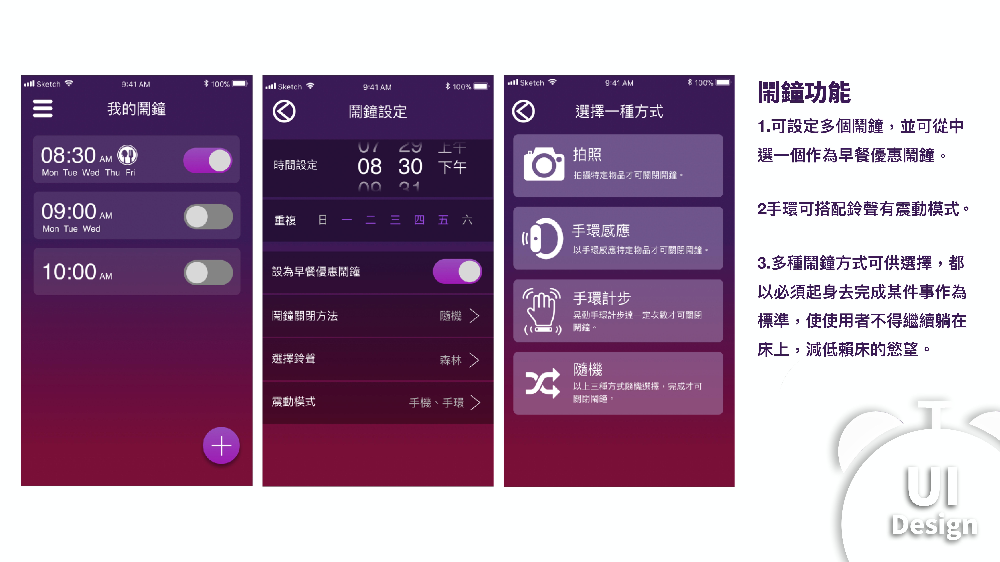

I'm a project manager with a strong sense for aesthetics and interaction, and passionate about new things.
About ME
Hi! I'm Johnathan.
I'm a project manager with a strong sense for aesthetics and interaction, and passionate about new things.
- UI Design
- UX Research
- Front-End Develope
What I Can Do
My Skills
UI Design
介面設計
Sketch Photoshop
Front-End Development
網頁前端/切版
CSS HTML5 Javascript
JQuery Bootstrap UIkit
UX Research
使用者經驗研究
Conpetitive Product Analysis
Persona
Recent Works
PORTFOLIO


kinect2協助全身復健系統
這是我與大學同學Lin共同協作的畢業專題，我在此專案負責的是前端(包含介面設計)。這是我首次接觸前端，從這專案發現前端影響的層面比我想像中來得大。即便是一個簡單的按鈕，他的位置甚至配色都會影響使用者的體驗。最讓我印象深刻的是，當我完成整個介面的設計時，遇到了瓶頸，不知如何更優化使用者體驗。後來換位思考後才突然想到，此軟體是設計給行動不便需復健的人，如果能用手勢取代滑鼠，便能減少許多使用上來回走動的不便。於是我們便加入了此功能，讓kinect2的相機捕捉影像，便以手勢代替滑鼠。完成此功能之後，使用上變得方便許多，也讓使用者環境變得友善許多。並且在最後也獲的系上教授的認可，獲得了佳作的肯定。
Role: Design, Illustration, Front-End
Language: C#
運用前端技術，實現體驗的良好傳達。


U28-Youtuber社群平台
這是我與大學同學Leo共同開發的專案，也是首次開發一個完整的專案。
從主題發想，討論需求，設計網站結構，介面設計，切出版面，實現Code，連接後端，測試，最終Demo。
全程參與了這個專案，體驗了各個階段各個部門的工作流程，也學會了用不同的角度去檢視專案。
Role: Design, Illustration, Front-end
網站開發完全從零開始一步一步慢慢發展到線上，每一個步驟都是至關重要的。

Bright 不賴鬧鐘
這是我與大學同學Bei共同協作的專案，此專案也是從無到有，由UI/UX的角度去發想的。
需求挖掘，市場調查，競品分析，使⽤體驗分析，設計⽬標，介⾯設計，甚至包含logo Design。
在這個專案學用到非常多UX research的方法，也是第一次以設計師的角度去發想產品，接觸到了非常多以往沒碰過的領域。
最重要的是開發了我對UI/UX的興趣。
Role: UI Design, Illustration, Logo Design, UX research
運用前端技術，實現體驗的良好傳達。


Web UI project
網頁前端課程作業，首次自己從零到有設計的網頁。為之前工讀的密室逃脫工作室設計首頁，從專案發想，Wireframe設計，色彩規劃，最後使用Sketch繪製，皆由本人獨立完成。
Role: Design, Illustration
Tool: Sketch, Balsamiq
UI的價值包括美，但不限於美。